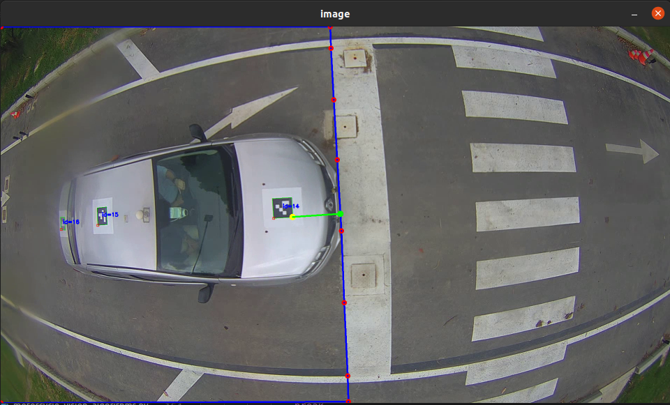

Update lines for Line stop maneuvers
If the line for line stop maneuver is changed or the camera is moved, the line for line stop maneuver must be updated. The line for line stop maneuver has two important parameters: the countour of the line and the offset from the countour of the line to account for the distance from the Aruco marker to the front of the vehicle. The countour of the line is defined by a list of points while the offset is given as a single integer.
The parameters of the countour of the line and the offset are located on the top of the files ansv_componente3/Pista/Vision/Car_algorithms/stop_lines/stop_lines_algorithms.py and ansv_componente3/Pista/Vision/Motorcycle_algorithms/stop_lines/stop_lines_functions.py. As an example the stop line for post 9 of the Car’s track test is shown below.
# Post 9 LINE_STOP_post9 = np.array([[0,0], [381, 0], [380, 30], [380, 105], [378, 175], [379, 250], [383, 329], [388, 416], [394, 495], [396, 1080], [0, 1080],], dtype=np.int32) AREA_ALLOWED_post9 = LINE_STOP_post9.copy() offset_x_post9 = -130 for ii in range(1, len(AREA_ALLOWED_post9)-1): AREA_ALLOWED_post9[ii][0] += offset_x_post9
Obtain the countour of the line
To obtain the countour of the line, the following steps must be followed:
Open the file ansv_componente3/Pista/Vision/utils/line_stops_contour.py and edit the video_path variable to point to the video file that will be used to obtain the countour of the line.
35 # Set the direction of the video 36 video_path = "/home/josefajardo/Documents/Set_datos_ANSV/Carro_pista/Prueba_06_09_2022_10_24_36_HONDA/videos/Poste_6/Poste_6_06_09_2022_10_24_36.avi"
Open a terminal and execute the following command:
cd ~/ansv_componente3/Pista/Vision/utils python3 line_stops_contour.pyA window will open with the video. As shown below:
In the video you can use the left click to add points to the countour. The points need to be added in a clockwise manner starting with the upper-left corner of the image. You can add as many points as needed to define the countour. An example with 10 points is shown below, where the points are marked with a red circle and are numbered from 1 to 10, noting that they are added in a clockwise manner.
Once the countour is defined, press the letter q or ESC on the keyboard to print the final countour in the terminal and close the window. As an example, the countour of the previous image is shown below:
# FINAL POINTS np.array([ [4, 4], [944, 0], [946, 62], [954, 210], [964, 382], [976, 586], [984, 792], [994, 1002], [996, 1076], [4, 1078], ], dtype=np.int32)
Note
The countour is printed in the terminal as a list of points. The points are printed as a tuple of two integers. The first integer is the x coordinate and the second integer is the y coordinate.
Edit the first and last point to be exactly the corners of the image, i.e., (0, 0) and (0, 1080). As an example the previous countour should look like the one below:
# FINAL POINTS np.array([ [0, 0], [944, 0], [946, 62], [954, 210], [964, 382], [976, 586], [984, 792], [994, 1002], [996, 1076], [0, 1080], ], dtype=np.int32)
Paste the previous contour in the respective file for Car or Motorcycle (ansv_componente3/Pista/Vision/Car_algorithms/stop_lines/stop_lines_algorithms.py or ansv_componente3/Pista/Vision/Motorcycle_algorithms/stop_lines/stop_lines_functions.py). Accordingly to the post number, the countour should be pasted in the variable LINE_STOP_postX. As an example, the countour for post 6 using the previously obtained contour should look like the one below:
# Post 6 LINE_STOP_post6 = np.array([ [0, 0], [944, 0], [946, 62], [954, 210], [964, 382], [976, 586], [984, 792], [994, 1002], [996, 1076], [0, 1080], ], dtype=np.int32)
{kind=link}
{kind=link}
{kind=link}
Obtain the offset
As the contour previously obtained only takes into account the location of the line in the image, it is needed to obtain the offset to take into account the distance from the front marker to the most front point of the vehicle. To obtain the offset, the following steps must be followed:
Open the file ansv_componente3/Pista/Vision/utils/line_stops_offset.py and replace the LINE_Points with the points of the countour obtained in the previous steps. As an example the countour for post 6 should look like the one below:
import cv2 import numpy as np # List of line points LINE_Points = np.array([ [0, 0], [944, 0], [946, 62], [954, 210], [964, 382], [976, 586], [984, 792], [994, 1002], [996, 1076], [0, 1080], ], dtype=np.int32)
In the file ansv_componente3/Pista/Vision/utils/line_stops_offset.py edit the video_path variable to point to the video file that will be used to obtain the offset from the line to the Aruco marker.
48 # Set the direction of the video 49 video_path = "/home/josefajardo/Documents/Set_datos_ANSV/Carro_pista/Prueba_06_09_2022_10_24_36_HONDA/videos/Poste_6/Poste_6_06_09_2022_10_24_36.avi"
In the same file edit the initial_frame to an integer that represents the frame number where the vehicle is close to the line but before passing it.
51 # Set initial frame 52 initial_frame = 1335
Note
The initial frame can be estimated using the fps of the video and the time when the vehicle is close to the line but before passing it. E.g.: If the video has a fps of 15 and the vehicle is close to the line at 100 seconds, the initial frame would be 1500.
Open a terminal and run the following command:
cd ~/ansv_componente3/Pista/Vision/utils/ python3 line_stops_offset.pyA window showing the line and the Aruco marker should appear. As an example, the window for the countour of post 6 is shown below:
Press the letter p or the Space bar to pass the frame until the front of the vehicle has almost passed the line. As an example, the image below shows the frame where the vehicle is close to the line but before passing it.
Click on the closest point of the Aruco marker to the line. When clicked a yellow point will appear and the perpendicular line from this point to the stop line will appear in green. As an example, the image below shows the point that should be clicked.
Note
You can click on other part of the image to override the previous point.
After selecting the point, press the letter q or ESC to exit the program. The offset will be printed in the terminal. As an example, the offset for the countour of post 6 is shown below:
Offset Distance: -137
Paste the distance in the offset_x_postX variable which is located below the contour of the line that you are updating. As an example, for the post 6 with the countour obtained in the first section of this tutorial, the offset should be pasted in the variable offset_x_post6. The variable should look like the one below:
# Post 6 LINE_STOP_post6 = np.array([ [0, 0], [944, 0], [946, 62], [954, 210], [964, 382], [976, 586], [984, 792], [994, 1002], [996, 1076], [0, 1080], ], dtype=np.int32) AREA_ALLOWED_post6 = LINE_STOP_post6.copy() offset_x_post6 = -137 for ii in range(1, len(AREA_ALLOWED_post6)-1): AREA_ALLOWED_post6[ii][0] += offset_x_post6
{kind=link}
{kind=link}
{kind=link}
Validate the updated line
After updating the line, it is needed to validate that the line is correctly detected. To do so, process the video again and check that the line is correct. As an example the image below shows the line updated for post 6, in which can be seen that the offseted line (GREEN line) corresponds to the closest point of the aruco marker when the vehicle is just before passing the line.
{kind=link}
{kind=link}
{kind=link}